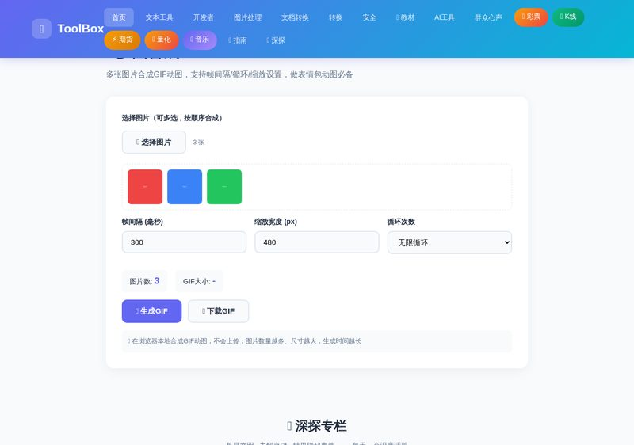
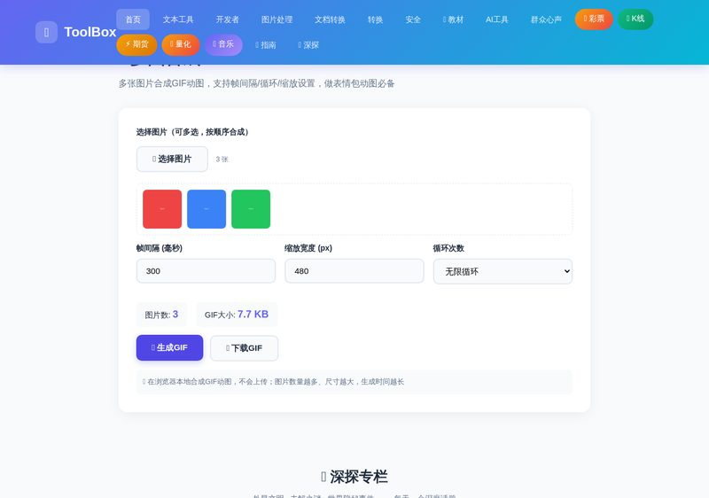

想把一组照片做成动感十足的表情包、宣传稿或朋友圈九宫格动图？多图合成GIF 让你在浏览器里把多张图片按顺序合成一张 GIF 动图——帧间隔、循环次数、缩放宽度全部可调，无需安装任何软件。下面是一份 3 步上手指南。
进入首页后，点击「媒体工具」分类找到「🎞️ 多图合成GIF」。点击"选择图片"按钮，可以一次性多选多张图片（jpg/png/webp 均可），它们会按选择顺序排列，作为 GIF 的每一帧。

上传后可以设置三项参数：帧间隔（每张图片停留的毫秒数，越小动画越快）、缩放宽度（导出图片的宽度，越小体积越小）、循环次数（无限循环或播放 N 次）。默认 300ms、480px、无限循环基本适合大多数场景。

点击「🎞️ 生成GIF」，浏览器会在本地把图片逐帧合成为动图（图片数量越多耗时越长）。完成后会显示 GIF 文件大小，点击「💾 下载GIF」即可保存到本地，直接用于微信、QQ、网页或文档。
没有硬性限制，但建议控制在 10 张以内。图片越多、分辨率越高，生成时间越长、GIF 体积越大；如果文件过大，可以先降低"缩放宽度"。
把「帧间隔」调小（100-200ms）动画会更流畅；如果希望慢速翻页效果，则调大到 800ms 以上。
工具会把所有帧缩放到统一尺寸，尺寸不一致的图片会在两侧/上下留白以保证画面稳定；建议上传前把图片裁成相同宽高比。